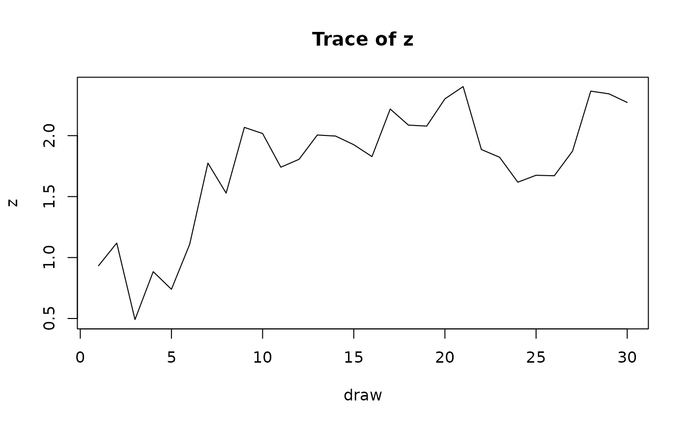
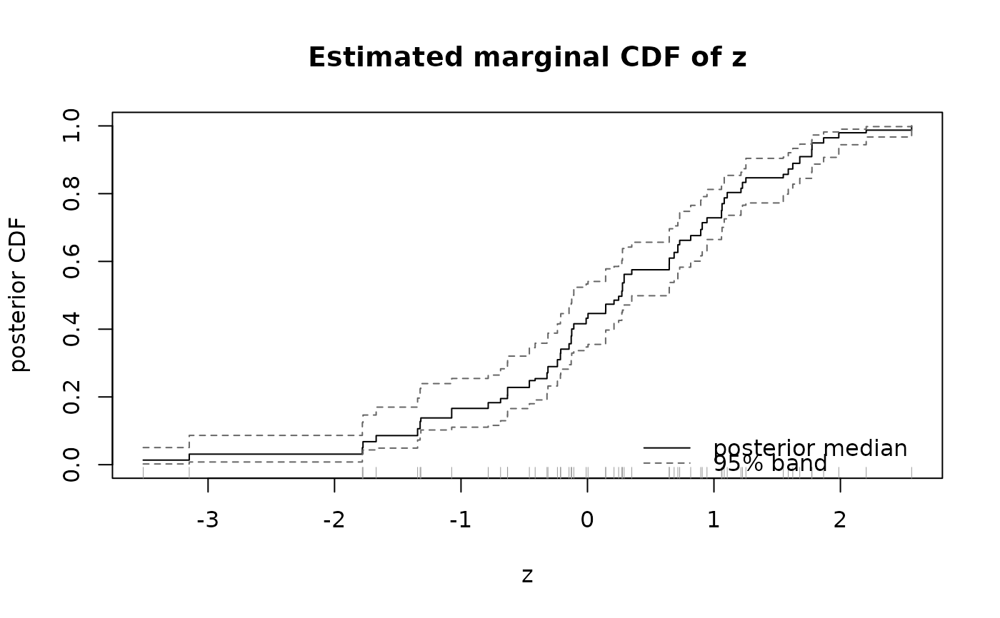

Plots of the MCMC chain (or, for type = "cdf", of an estimated
marginal distribution) for one or more parameters of a
CopRegBAYES fit.
Arguments
- x
An object of class
"copregbayes", as returned byCopRegBAYES.- which
Which parameters to plot, by name or by position. For
typeother than"cdf", names are matched againstcolnames(x$draws)(regression coefficients, the residual variancesigma2, and the free entries of the copula correlation matrix); fortype = "cdf", names are matched againstnames(x$lambda.draws)(the regressors entering the copula). Defaults tox$endo.names, the endogenous regressors, since those are what the correction is about.- type
One of
"trace"(the sampled values against iteration number),"acf"or"pacf"(autocorrelation and partial autocorrelation of the draws),"density"(a kernel density estimate of the posterior with the mean marked), or"cdf"(the posterior of the regressor's marginal CDF, i.e. the cumulative sums of its probability masses, shown as a step function with a pointwise credible band across the draws – an object that has no counterpart in the frequentist estimators, where the CDF is a fixed plug-in with no uncertainty attached). Defaults to"trace".- level
Credible level for the band shown when
type = "cdf". Defaults to0.95.- ask
Whether to prompt between plots when more than one is drawn. Defaults to
TRUEon an interactive, multi-plot device andFALSEotherwise.- ...
Further arguments passed to the underlying
graphics::plot(orstats::acf/stats::pacf) call.
References
Haschka, R. E. (2025). Bayesian inference for joint estimation models using copulas to handle endogenous regressors. Oxford Bulletin of Economics and Statistics. doi:10.1111/obes.70023
Examples
set.seed(1)
n <- 60
x <- rnorm(n); z <- x + rnorm(n); y <- 1 + z + x + rnorm(n)
fit <- CopRegBAYES(y ~ z | x, data = data.frame(y, z, x),
iterations = 200, burnin = 50, thin = 5, verbose = FALSE)
plot(fit, which = "z", type = "trace")

plot(fit, which = "z", type = "cdf")
